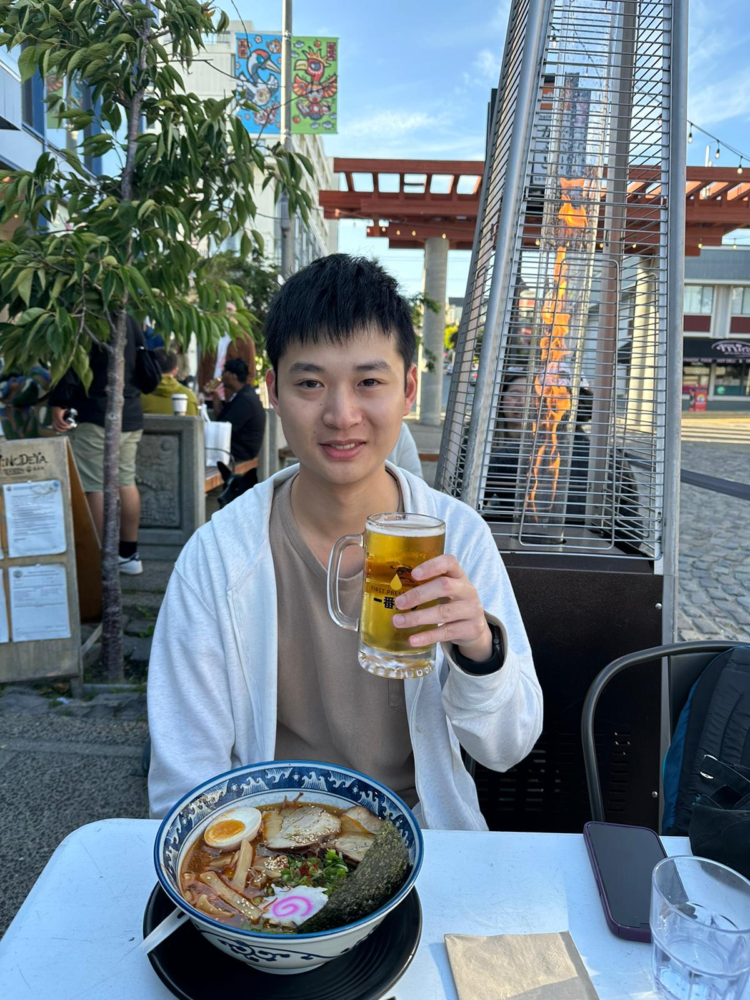

MSCS @ CMU (He/him)
Email: kaiwenx@andrew.cmu.edu
[GitHub] [LinkedIn] [Twitter] [On My Preferred Name]

I am a Master of Science in Computer Science student at Carnegie Mellon University. I am a member of The CAOS Group led by Professor Dimitrios Skarlatos. Based in the San Francisco Bay Area in the summer of 2023, I am working at Rivos as a member of technical staff (software) intern.
I like anything related to computer systems, among which operating systems are my favorite. Projects I have worked on until now include memory defragmentation in data centers and the hypervisor of a confidential virtual machine. A more formal listing of my experience can be found in my Curriculum Vitae.
I have two undergraduate alma maters, Columbia University and City University of Hong Kong, made possible by the joint degree program. One of the best memories of my college life was TA'ing the Operating Systems class two times with an amazing team in the senior year. The course is composed of advanced UNIX programming, OS theory, and Linux kernel hacking.
Last updated: 2023-06-22.